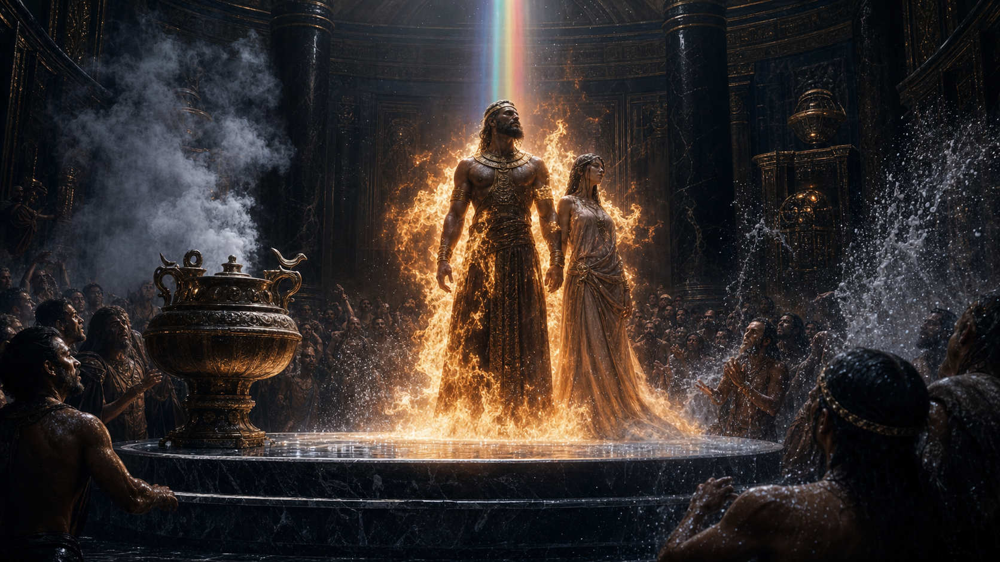

Часть 1
Глава 2.8

На третий день от объявления Йереда все были призваны в зал общего сбора. Ханох пришел последним, когда напряжение в зале стало почти осязаемым.
Наама ждала. Она не фыркнула, когда он к ней потянулся губами - напротив - подставила губы под поцелуй. При этом взяла руку брата, и Ханох захлебнулся от ощущения счастья.
- Ты давно тут? - выдохнул он, стиснув её ладонь.
- С рассвета, - Наама боком прижалась к нему, и Ханох почувствовал ее дрожь.
- Ты шутишь?
- Нет разумеется. Я должна своими глазами увидеть, что и как будет делать отец.
Ханох молча переступил с ноги на ногу. Потом собрался сестру приобнять, но она мягко отвела его руку.
- Для него я - никто, - продолжала сестра. - Негодная дочь, капризуля, как он меня называет. Я отвергла все его варианты замужества. Я давно ему поперек горла. Он ждет не дождется, когда сможет спровадить меня из дворца.
- Наама!.. - воскликнул Ханох. - Ты только скажи - я для тебя сверну горы... Я...
Наама погладила его по руке.
- Смешно. Ты себя защити! Да без моей помощи ты не переживешь этот год.
Тем временем Йеред взошел на помост. Молча, не торопясь, он разжёг огонь в медной жаровне и бросил в него несколько пригоршней ладана. Облака ароматного дыма поплыли по залу, достигая самых его дальних концов.
Йеред поднял обе руки. Рукава его богатой накидки опали до плеч, обнажив рельефные бицепсы. Люди замерли.
В гробовой тишине прозвучало:
- Сегодня. Я беру в жёны Цилю. Мою избранницу. Призываю собрание в свидетели.
Циля стояла внизу, опустив низко голову. Ее плечи от напряжения и страха подрагивали. Она знала, что ей предстоит.
Йеред повысил голос, обращаясь к невесте.
- Женщина, ты откуда пришла?
- Я не знаю.
- Ты не помнишь?
- Я забыла все, что было раньше. Я омыла себя в водах реки, текущей по Эдену, и стала другой.
Циля провела руками по волосам, и с них закапали тяжелые капли.
- Ты готова?
- Я готова, владетель.
- Подойди!
Циля поднялась на помост. Йеред взял ее за руку и поставил одесную. Потом резким движением сорвал с Цили накидку и швырнул ее в пламя. Мокрая ткань не погасила пламя - наоборот, огонь взвился, словно в него плеснули смолу. Слепящий всполох лизнул руку Йереда, и его одеяние вспыхнуло, как сажа в печи.
- Как он это сделал? - прошептал потрясенный Ханох.
Наама легонько ударила его в бок локотком.
- Я не знаю... Смотри!
Владетель протянул руку вперед, Циля положила на нее сверху свою. Огонь перекинулся с Йереда на его нареченную.
Они оба стояли в огне, а кругом было тихо так, что отчетливо слышался треск их горящих волос. Засмердело паленым.
- Наама, - Ханох сжал Нааме ладонь. - Смотри, у него свежий шрам!
- Вижу. Там, где кончаются рёбра!
Пламя опало. И люди ахнули: на гладких, безволосых телах, не было даже следа от ожогов. Огонь их очистил, не нанеся повреждений.
Йеред возложил ладони на темечко Цили, и она, от тяжести его рук, вынуждена была встать на колени. Но теперь голова её была гордо поднята - она сверху взирала на своих слуг.
На помост вышел раб. Он нес поднос с хрустальным фиалом, затянутым золотым кружевом. Его венчала пробка в виде крылатого, держащего над головой тонкий шип.
- Это что?
- Не знаю, - прошептала Наама. - Видишь - внутри жидкость искрится? Думаю - это и есть тот раствор. Помнишь, я говорила.
Раб с подносом встал на колено. Йеред сжал в руке обсидиановый нож, три раза провел им через огонь. Циля зажмурилась. Владетель схватил её руку и полоснул по запястью. Она вскрикнула, брызнула кровь.
Йеред ввел шип. Ханох видел, как медленно пустеет фиал - жидкость перелилась в кровь женщины. Глаза её раскрылись, как от толчка - они были черны, потому что зрачки так расширились, что не хватило места белкам. Дыхание сбилось на короткие быстрые вдохи, а кожа побледнела и на ней заалели яркие пятна.
Она вырвала руку и бросилась мужу на шею, что-то быстро ему говоря. Издалека слов было не слышно, но калейдоскоп эмоций на лице Цили говорил сам за себя.
Йеред мягко отстранил от себя Цилю и обвел взглядом зал. Циля сделала шаг, покачнулась и попыталась ухватиться за подставку жаровни. Движения её были неровны, тело слушалось плохо. И она бы упала, если бы владетель не подхватил. Он обхватил Цилю за талию, встряхнул и заставил прямо стоять. Она закрыла глаза, собралась. Под руками Йереда дрожь постепенно отпускала её.
Циля пыталась терпеть, но все же временами шипела от боли. Йеред взглянул на руку, с которой еще капала красная кровь. И все увидели, как от раны к плечу уже протянулась тонкая синяя жилка. Она поднималась все выше и выше. Синева уже охватила плечо и медленно начала разливаться по телу.
- Голубая кровь, - восторженно прошептала Наама. - У Цили будет теперь кровь голубая...
Йеред улыбнулся с торжеством победителя и бросил в жаровню опустевший фиал. Приказал Циле встать рядом с собой. Шатаясь, она сделала пару шагов.
Грянул гром, и толпа загудела. Все взгляды устремились назад. Ханох крутнулся на месте. Луч - семицветный, тонкий, как спица, бил с потолка. Он гудел и дрожал, как будто он что-то или кого-то искал. Там, куда он ударил, мрамор, с жутким грохотом лопнул. Осколки разлетелись и задели людей. Толпа отшатнулась к помосту, луч метнулся за ними.
Чиркнул над головами рабов, и уперся в грудь Йереда - владетель согнулся от боли. А луч перепрыгнул на Цилю. Циля взвизгнула. По залу расползалась вонь горелого мяса.
И тут луч исчез. Толпа слуг бесновалась. А на помост низверглась вода. Словно выплеснули целое озеро. Вода обрушилась всей своей массой, и холодные брызги долетели до задних стен зала. Молодожены упали, сбитые с ног. Еще раз прогрохотал гром, и все кончилось.
Крики толпы заглушали стоны невесты. С прокушенной губы владетеля на омытый помост капнула синяя кровь.
Тяжело дыша, Йеред встал и поднял Цилю на ноги. Она дрожала и висла на нем, пытаясь спрятать лицо у него на груди. Она дрожала так сильно, что клацали зубы.
Йеред тоже казался растерянным. Он медлил, ошеломленный содеянным.
Зал загудел голосами - люди приходили в себя после увиденного.
- Теперь она не дочь человеческая, - то и дело слышал Ханох.
Йеред наклонил голову и осмотрел свое тело. Потом - перевел взгляд на Цилю. А потом медленно перевел взгляд на слуг. У него был повод для гордости - такого не совершал еще ни один из живущих! И едва ли повторится такое.
Он взял Цилю за плечи, развернул её лицом к зрителям, и сам встал с ней рядом, выставляя напоказ их тела. Чтобы все увидели: у обоих под левым соском синел свежевыжженный знак - два неразрывно сплетённых в бесконечность кольца.
Наама схватилась за голову. Лишь теперь она поняла, как силен и страшен отец. И она испугалась.
- Как ты думаешь, что это за луч и вода? - осипшим голосом спросил Ханох у сестры.
- Из города. Как фиал, луч, и как все остальное, - процедила она.
И Ханох вдруг прозрел. И тут Ханоха словно ударило.
- Он убьет меня, - в изнеможении прошептал он. - Наама... Он родит от Цили наследника, и тогда он уничтожит меня... Может, лучше сбежать?
Наама бросила на него дикий взгляд.
Сбежать и прятаться? Среди дикарей? Ну уж нет! Или остаться с отцом? Но прежняя жизнь, и раньше не радостная, теперь превратится в тюрьму. Нет. Она вырвет себе другую судьбу. Иначе сгниет в женах неизвестно кого. Надо делать брата владетелем. Но без воли Адама их замысел мертв. Значит...
- Пусть подавятся! - сорвалось у нее. - Ты у меня будешь владетелем! А иначе - нас обоих сожрут!
Ох! Она произнесла это вслух? Кто-то, кроме Ханоха, их слышал? Все были поглощены происходящим у помоста. Циля распласталась на досках и её отливали водой с из бассейна.
Ханох с сомнением покачал головой.
- Владетелем? Зачем это мне? Вот если бы ты стала моей...
Она с силой взъерошила волосы на его голове.
- Неужели ты думаешь, что когда я тебя сделаю владетелем, то подпущу к тебе какую-то бабу? - Глаза ее опасно блеснули.
- Как? Ты? Я? Неужели? Со мной?
Наама кивнула и Ханох потянулся её поцеловать. Она ткнула ему под дых кулаком.
- Ты совсем одурел? Отец же увидит! Он не должен ничего заподозрить. Пусть думает, что в твоей голове по-прежнему только рабыни и пьянство! Веди себя, как вел - лоботрясничай в шмире и валяйся с рабынями! Иначе - конец.
Ханох отшатнулся от сестры. И Наама поняла: теперь Ханох принадлежит только ей...